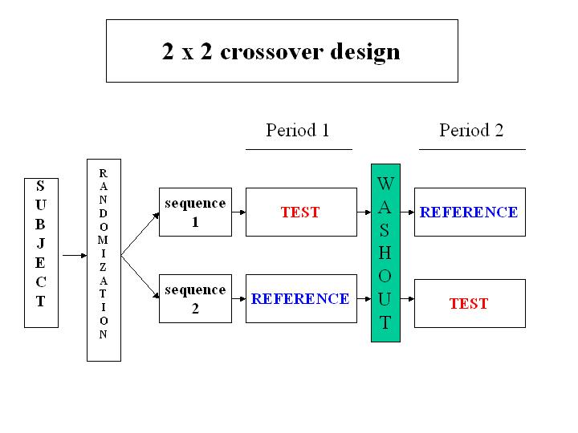

library(tidyverse)
library(kableExtra)
library(ggplot2)
library(here)
library(car)
library(lme4)
library(lmerTest)14 교차실험
14.1 필요한 패키지
14.2 교차실험의 개요

위의 그림은 2 개의 순서(sequence), 2개의 시점(period) 로 구성된 \(2 \times 2\) 교차실험(crossover experiment, crossover desing)의 구조를 나타낸다.
순서(sequence) 는 환자가 처리를 받는 순서(treatment sequence)를 의미하며 기간(period) 는 환자가 처리를 받는 두 시점, 즉 첫번째 치료(period 1)와 두 번째 치료의 시점(period 2)을 의미한다.
교차실험에서는 각 피험자를 임의화 방법을 통하여 2개의 순서 중 하나의 순서에 임의로 배정하여 두 가지 서로 다른 치료를 정해진 순서에 따라서 받는다. 위의 그림 14.1 에서 첫 번째 순서(sequence 1)에 배정된 환자는 첫 번째 시점에서 TEST 처리를 받고 약물의 성분이 신체에서 모두 빠져나가는 기간(washout period; 세척기간)을 가진 후에 두 번째 시점에서는 REFERENCE 처리를 받는다. 반대로 두 번째 순서(sequence 2)에 배정된 환자는 첫번째 시점에서 REFERENCE 처리를 받고 두 번째 시점에서는 TEST 처리를 받는다. 따라서 반응변수은 각 피험자에 대해 두 번 반복 측정된다.
교차 실험는 치료가 완치에 영향을 미치지 않고 상태를 완화하는 치료, 즉 만성 질환에 대한 치료 효과를 연구할 때 주로 사용된다. 한 가지 치료에 대한 반응이 측정된 후 치료를 중단하면 피험자가 기존의 상태로 돌아갈 수 있어야 교차실험을 수행할 수 있다.
교차실험에서는 동일한 실험 대상에 대하여 치료법을 비교하기 떄문에적은 표본의 크기로 더 정확한 결과를 얻을 수 있을 것으로 기대할 수 있다. 독립 집단을 비교하는 실험과 비교하면, 한 명의 환자에 대하여 서로 다른 처리를 받은 반응값을 동시에 얻을 수 있으므로 개인의 특성이 제거된 치료 효과를 더 정밀하게 얻을 수 있다. 따라서 독립 집단을 비교하는 실험과 비교할 때, 교차실험에서는 필요한 표본 크기가 작아진다.
하지만, 교차 실험의 통계 분석은 독립 집단을 비교하는 실험보다 더 복잡하며 추가적인 가정이 필요하다. 때로는 치료 효과(treatment effect)를 이전 치료의 이월 효과(carry-over effect)와 분리하기 어려울 수 있다.
또한, 피험자를 최소 두 번 이상 측정해야 하므로 환자를 연구에 계속 참여하게 하는 것이 더 어려울 수 있다. 특히 측정 과정이 불편하거나 시간이 많이 소요되는 경우에는 중도 탈락하는 환자가 많아 질 수 있다.
14.3 교차실험의 모형
교차실험의 통계적 분석에 대한 자세한 내용은 Chow 와/과 Liu (1999) 또는 Jones 와/과 Kenward (2003) 을 참고하자.
먼저, 두 개의 처리 T (TEST) 와 R (REFERENCE) 를 비교하는 실험이라고 가정하자. 또한 각 처리 순서(sequence)에 각각 \(n\) 명의 피험자가 할당되었다고 가정하자.
\(2 \times 2\) 교차실험의 일반적인 통계적 모형은 다음과 같이 나타낼 수 있다.
\[ y_{i j k}= \mu+S_{ik}+p_{j}+f_{(j, k)}+c_{(j-1, k)}+e_{i j k}, \quad i=1, \ldots, n, ~~ j=1,2, ~~ k=1,2 \tag{14.1}\]
위의 14.1 식에서 주어진 각 항들의 의미는 다음과 같다.
반응값
\(y_{i j k}\) 는 \(i\) 번째 환자가 \(k\) 번째 순서의 \(j\) 번째 시점(period)에 배정된 치료를 받았을 때의 반응값을 나타낸다.
| Sequence | Period 1 | Period 2 |
|---|---|---|
| \(1\) | \(y_{i11}\) | \(y_{i21}\) |
| \(2\) | \(y_{i12}\) | \(y_{i22}\) |
전체 평균
\(\mu\) 는 전체 평균을 나타낸다.
개인 효과
\(S_{ik}\) 는 \(k\) 번째 순서에 배정된 \(i\) 번째 피험자의 개인적인 효과를 나타내는 임의 효과(random effect)이다.
일반적으로 개인 효과 \(S_{ik}\) 는 평균이 0이고 분산이 \(\sigma^2_{s}\) 인 정규분포를 따른다고 가정한다.
시점 효과
\(p_{j}\) 는 \(j\) 번째 시점(period)의 효과를 나타낸다.
| Sequence | Period 1 | Period 2 |
|---|---|---|
| \(1\) | \(p_1\) | \(p_2\) |
| \(2\) | \(p_1\) | \(p_2\) |
처리 효과
\(f_{(j, k)}\) 는 \(k\) 번째 순서에서 \(j\) 번째 시점에 적용된 처리의 효과를 나타낸다.
| Sequence | Period 1 | Period 2 |
|---|---|---|
| \(1\) | \(f_T\) | \(f_R\) |
| \(2\) | \(f_R\) | \(f_T\) |
처리 효과를 나타내는 \(f_{(j, k)}\) 는 배정된 순서와 시점에 따라 정해지는 효과이다. 예를 들어 그림 14.1 에서 \(f_{(1, 1)}\) 는 T 처리의 효과 \(f_T\) 를 나타내고 \(f_{(2, 1)}\) 는 R 처리의 효과 \(f_R\) 를 나타낸다. 또한 \(f_{(1, 2)}\) 는 R 처리의 효과를 나타내고 \(f_{(2, 2)}\) 는 T 처리의 효과를 나타낸다.
\[ f_{(j, k)}= \begin{cases} f_{T} & \text { if } k=j \\ f_{R} & \text { if } k \neq j\end{cases} \]
이월 효과
\(c_{(j-1, k)}\) 는 환자가 이전 시점에서 받은 처리 효과의 일부가 다음 시점에 영향을 미치는 효과로서 이월 효과(carry-over effect)를 나타낸다.
| Sequence | Period 1 | Period 2 |
|---|---|---|
| \(1\) | \(0\) | \(c_T\) |
| \(2\) | \(0\) | \(c_R\) |
이월 효과를 나타내는 \(c_{(j-1, k)}\) 는 두 번째 시점에서만 나타나는 효과로서 앞에서 받은 처리의 효과가 세척기간(washout period)에서 모두 제거되지 못하고 다음 시점에도 영향을 주는 효과를 나타낸다. 2개의 순서를 비교하면 첫 번째 시점에서 받은 처리 효과가 다르기 때문에 이월 효과도 다르게 나타날 수 있다. 예를 들어 그림 14.1 에서 \(c_{(1, 1)}\) 은 첫 번째 순서의 첫 번째 시점에서 받은 처리의 이월효과를 나타내기 때문에 T 처리의 이월 효과 \(c_T\)를 나타내고 \(c_{(1, 2)}\) 는 R 처리의 이월 효과 \(c_R\) 를 나타낸다.
\[ c_{(j-1, k)}= \begin{cases}c_{T} & \text { if } j=2, k=1 \\ c_{R} & \text { if } j=2, k=2 \\ 0 & \text { otherwise }\end{cases} \]
오차항
\(e_{i j k}\) 는 독립적인 오차항을 나타낸다.
오차항은 독립적이고 평균이 0 이며 분산이 \(\sigma^2_e\) 인 정규분포를 따른다고 가정한다. 또한 오차항 \(e_{i j k}\) 는 개인 효과 \(S_{ik}\) 와 독립이라고 가정한다.
식 14.1 가정 하에서 \(2 \times 2\) 교차 설계에서 나타나는 반응변수 \(y_{ijk}\) 의 평균을 다음 표와 같이 나타낼 수 있다.
\[ E(y_{ijk}) = \mu_{jk} \]
을 다음과 같이 나타낼 수 있다.
| Sequence | Period 1 | Period 2 |
|---|---|---|
| \(1\) | \(\mu_{11}=\mu+p_{1}+f_{T}\) | \(\mu_{21}=\mu+p_{2}+f_{R}+c_{T}\) |
| \(2\) | \(\mu_{12}=\mu+p_{1}+f_{R}\) | \(\mu_{22}=\mu+p_{2}+f_{T}+c_{R}\) |
14.4 효과에 대한 검정
교차실험의 각 효과를 추정하고 비교하기 위하여 다음과 같은 간단한 t-검정 방법을 고려할 수 있다.
14.4.1 이월 효과에 대한 검정
교차실험에서 이월 효과가 존재하면 처리 효과를 추정하기 어려울 수 있다. 만약 첫 번째 시점의 처리 효과가 두 번째 시점에도 영향을 미치는 경우, 즉 이월 효과가 존재하는 경우는 피험자에게 나타난 효과가 그 시점에서 받은 처리 효과인지, 전 시점의 처리 효과가 이월되어 나타난 경우인지 구분하기 어렵기 떄문이다.
따라서 이월 효과를 먼저 추정하고 이월효과가 유의하지 않은 경우 처리 효과를 비교하는 것이 일반적인 절차이다.
이월 효과를 추정하디 위하여 다음과 같은 방법을 고려할 수 있다.
먼저 각 순서에 대하여 환자의 두 반응값들의 합 \(t_{ik}\)
\[ t_{ik} = y_{i1k} + y_{i2k} , \quad k=1,2 \]
를 고려하면 모형 14.1 에서 다음과 같이 나타낼 수 있다.
\[ \begin{aligned} t_{i1} &= y_{i11} + y_{i21} \\ & = (\mu + S_{i1} + p_1 + f_T + 0 + e_{i11}) + (\mu + S_{i1} + p_2 + f_R + c_T + e_{i21}) \\ & = 2\mu + 2S_{i1} + p_1 + p_2 + f_T + f_R + c_T + e_{i11} + e_{i21} \\ & = 2\mu + p_1 + p_2 + f_T + f_R + c_T + (2S_{i1} + e_{i11} + e_{i21}) \\ & = 2\mu + p_1 + p_2 + f_T + f_R + c_T + e'_{i1} \\ t_{i2} &= y_{i12} + y_{i22} \\ &= (\mu + S_{i2} + p_1 + f_R + 0 + e_{i12}) + (\mu + S_{i2} + p_2 + f_T + c_R + e_{i22}) \\ &= 2\mu + 2S_{i2} + p_1 + p_2 + f_R + f_T + c_R + e_{i12} + e_{i22} \\ &= 2\mu + p_1 + p_2 + f_R + f_T + c_R + (2S_{i2} + e_{i12} + e_{i22}) \\ &= 2\mu + p_1 + p_2 + f_R + f_T + c_R + e'_{i2} \\ \end{aligned} \tag{14.2}\]
위의 식에서 \(e'_{i1}\) 와 \(e'_{i2}\) 는 각각 오차항들과 개인효과의 조합으로 나타난 새로운 오차항으로 볼 수 있다.
이제 \(t_{i1}\) 와 \(t_{i2}\) 의 각각의 평균 \(\bar t_1\) 과 \(\bar t_2\) 을 구하고, 두 평균의 차이를 \(\bar t\) 라고 하자.
\[ \bar t = \bar t_1 - \bar t_2 \quad \text{ where } ~~\bar t_1 = \frac{1}{n} \sum_{i=1}^n t_{i1} ~~\text{ and }~~ \bar t_2 = \frac{1}{n} \sum_{i=1}^n t_{i2} \] 위의 통계량 \(\bar t\) 의 기대값을 구해보면 14.2 식을 이용하여 다음과 같이 나타낼 수 있다.
\[ \begin{aligned} E(\bar t) & = E(\bar t_1) - E(\bar t_2) \\ & = (2\mu + p_1 + p_2 + f_T + f_R + c_T) - (2\mu + p_1 + p_2 + f_R + f_T + c_R) \\ & = c_T - c_R \end{aligned} \] 따라서 이월 효과 \(c_T - c_R\) 가 존재하는 가설검정을 위하여
\[ H_0: c_T - c_R = 0 \quad \text{ vs. } \quad H_1: c_T - c_R \ne 0 \]
\(\bar t\) 이용한 t-검정을 실시할 수 있다. 이월 효과에 대한 t-검정에서 사용할 통계량은 다음과 같다.
\[ t = \frac{\bar t}{\hat \sigma^2_t} \quad \text{ where } ~~ \hat \sigma^2_t = \sqrt{\frac{1}{n+n-2} \sum_{k=1}^2 \sum_{i=1}^n (t_{ik} - \bar t_k)^2} \] 위에서 구한 검정통계량 \(t\) 값이 \(t_{n+n-2, \alpha/2}\) 보다 크면 이월 효과가 유의하다고 판단할 수 있다. 반대로 \(t\) 값이 \(t_{n+n-2, \alpha/2}\) 보다 작으면 이월 효과가 유의하지 않다고 판단할 수 있으며 이 경우 처리 효과를 비교하는 것이 가능하다.
다만 유의할 점은 이월 효과가 통계적 유의하지 않다고 판단되더라도 이월효과가 존재하지 않는다는 강력한 증거는 아니다. 따라서 이월 효과가 나타나지 않도록 하기 위하여 충분한 세척기간을 두어야 한다.
14.4.2 처리 효과에 대한 검정
처리 효과 \(f_{T}\) 와 \(f_{R}\) 를 추정하기 위하여 다음과 같이 두 그룹을 비교하는 간단한 t-검정 방법을 적용해 보자.
처리 효과 \(f_{T}\) 와 \(f_{R}\) 를 비교하는 경우 이월효과가 없다고 가정한다. 즉
\[ c_T = c_R = 0 \]
먼저 두 처리 효과의 차이 \(\delta = f_{T}-f_{R}\) 를 반영하는 각 개인에 대한 반응값의 차이를 다음과 같이 나타낼 수 있다.
\[ d_{ik} = \frac{y_{i1k} - y_{i2k}}{2}, \quad k=1,2 \]
모형 14.1 에서 \(d_{ik}\) 는 각 순서(\(k=1,2\))에 대해서 다음과 같이 나타낼 수 있다.
\[ \begin{aligned} d_{i1} &= \frac{y_{i11} - y_{i21}}{2} \\ & = \frac{1}{2}(\mu + S_i + p_1 + f_T + 0 + e_{i11}) - \frac{1}{2}(\mu + S_i + p_2 + f_R + e_{i21}) \\ & = \frac{1}{2} (p_1 - p_2) + \frac{1}{2} (f_T - f_R) + \frac{1}{2} (e_{i11} - e_{i21}) \\ & = \frac{1}{2}(p_1 - p_2) + \frac{1}{2}(f_T - f_R) + e'_{i1} \\ d_{i2} &= \frac{y_{i12} - y_{i22}}{2} \\ &= \frac{1}{2} (\mu + S_i + p_1 + f_R + 0 + e_{i12}) - \frac{1}{2} (\mu + S_i + p_2 + f_T + e_{i22}) \\ &= \frac{1}{2} (p_1 - p_2) + \frac{1}{2}(f_R - f_T) +\frac{1}{2} (e_{i12} - e_{i22}) \\ &= \frac{1}{2}(p_1 - p_2) + \frac{1}{2}(f_R - f_T) + e'_{i2} \\ \end{aligned} \]
이제 각 순서에 대하여 반응값의 차이 \(d_{ik}\) 의 평균 \(\bar d_1\) 과 \(\bar d_2\) 을 구하고, 두 평균의 차이를 \(\bar d\) 라고 하자.
\[ \bar d = \bar d_1 - \bar d_2 \quad \text{ where } ~~\bar d_1 = \frac{1}{n} \sum_{i=1}^n d_{i1} ~~\text{ and }~~ \bar d_2 = \frac{1}{n} \sum_{i=1}^n d_{i2} \]
위의 통계량 \(\bar d\) 의 기대값을 구해보면 14.2 식을 이용하여 다음과 같이 나타낼 수 있다.
\[ \begin{aligned} E(\bar d) & = E(\bar d_1) - E(\bar d_2) \\ & = \left [ \frac{1}{2}(p_1 - p_2) + \frac{1}{2}(f_T - f_R) \right ]- \left [ \frac{1}{2}( p_1 - p_2) + \frac{1}{2}(f_R - f_T ) \right ]\\ & = f_T - f_R \end{aligned} \] 따라서 두 개의 처리 효과 유의하게 다른지에 대한 가설검정을 위하여
\[ H_0: f_T - f_R = 0 \quad \text{ vs. } \quad H_1: f_T - f_R \ne 0 \]
\(\bar d\) 이용한 t-검정을 실시할 수 있다. 처리 효과에 대한 t-검정에서 사용할 통계량은 다음과 같다.
\[ t = \frac{\bar d}{\hat \sigma^2_d} \quad \text{ where } ~~ \hat \sigma^2_t = \sqrt{\frac{1}{n+n-2} \sum_{k=1}^2 \sum_{i=1}^n (d_{ik} - \bar d_k)^2} \]
위에서 구한 검정통계량 \(t\) 값이 \(t_{n+n-2, \alpha/2}\) 보다 크면 두 처리 효과에 유의한 차이를 있다고 판단할 수 있다.